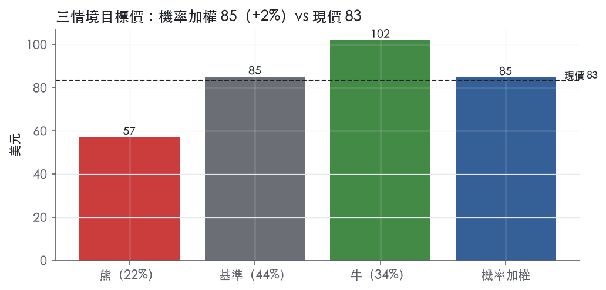
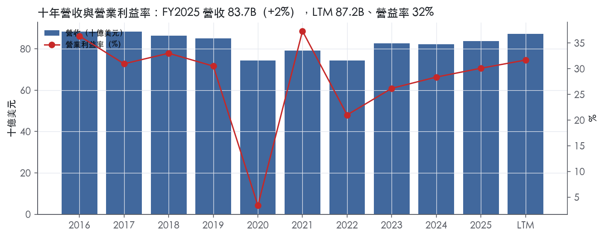
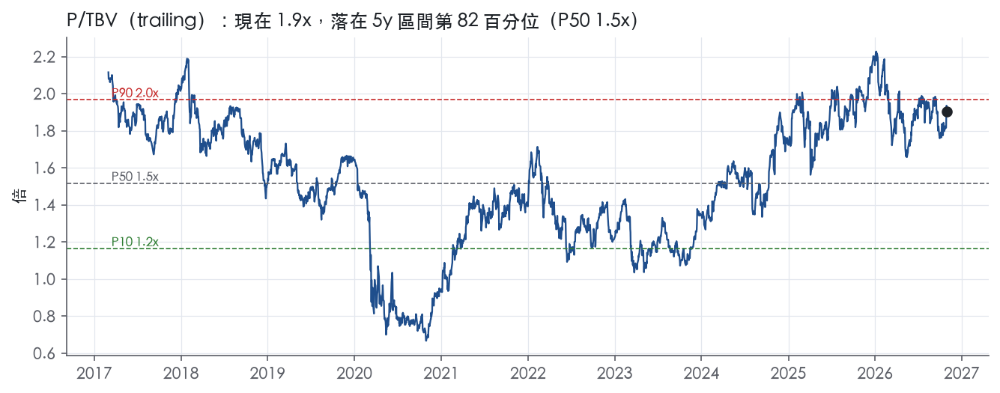
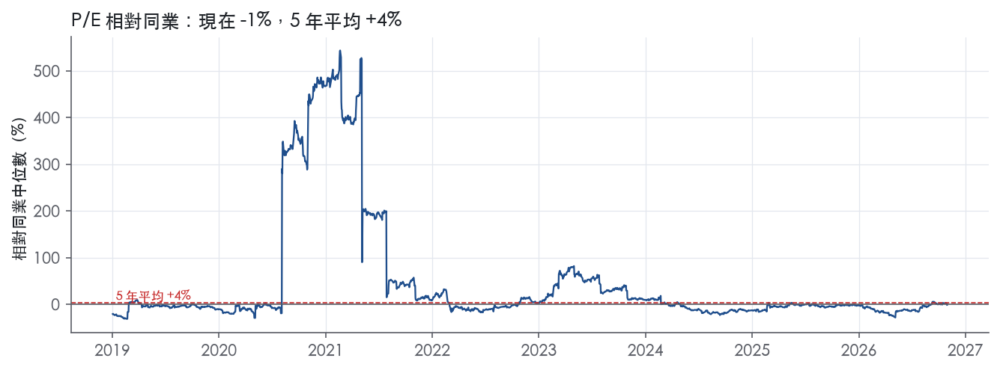
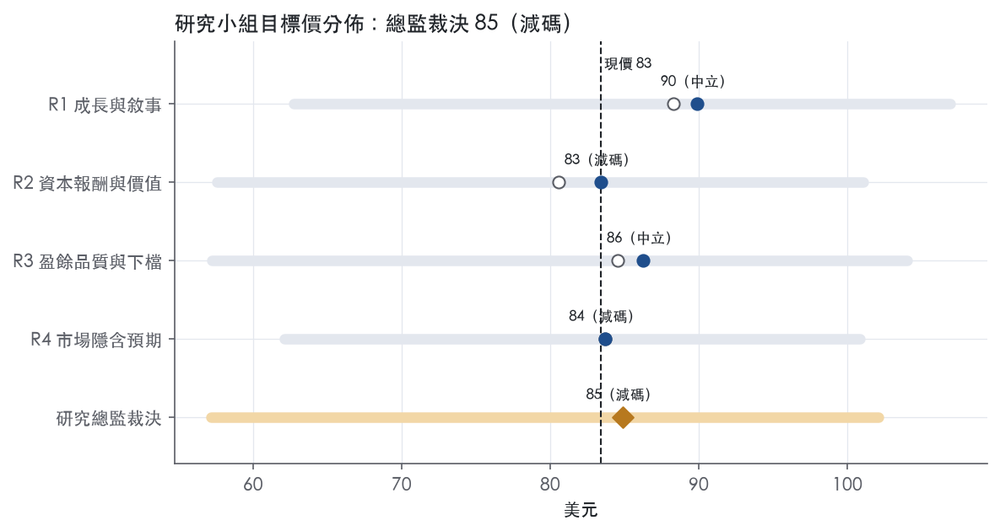
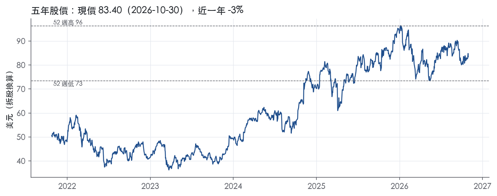

評等總表 › 金融 › WFC
槓桿撐高的ROTCE已入價，相對減碼｜評等 減碼｜目標價 85
| 報告日 | 評等 | 目標價 | 當時股價 | 超額報酬 |
|---|---|---|---|---|
| 2026-10-30 | 減碼 | 84.86 | 83.40 | -6.0% |
| 2026-10-09 | 減碼 | 81.56 | 83.55 | -10.4% |
| 快評 | 動作 | 結論 |
|---|---|---|
| 2026-10-13 | 維持 | 第三季低於預測，減碼論點獲證實 |
| 評等 | 減碼（邊界，鄰近中立） |
| 12 個月目標價 | 85 美元 |
| 現價 | 83.40 美元（2026-10-30） |
| 預期報酬 | 股價 +1.7%＋股息 2.2%＝總報酬 +4.0%；同業籃門檻 10.0%，超額 -6.0% |
| 估值方法 | P/TBV 1.8x，套在一年後的有形淨值 |
| 三情境 | 熊 57／基準 85／牛 102 |
| 研究流程 | 四位研究員兩輪辯論＋研究總監裁決 |
| 資料來源 | SEC EDGAR XBRL、Tiingo、FRED（全免費） |
槓桿撐高的ROTCE已入價，相對減碼（研究總監裁決，四位研究員兩輪辯論後）
評等 減碼（邊界，鄰近中立）｜12 個月目標價 85 美元（總監三情境機率加權 85 與研究員中位數 85 各半）｜現價 83.40（2026-10-30）
預期報酬：股價 +1.7%＋股息 2.2%＝總報酬 +4.0%。同業籃門檻 10.0%，超額 -6.0%，離中立的分界不到三個百分點，屬邊界評等（落在其他級距的機率約四成）。
估值方法：P/TBV 1.8x，套在一年後的有形淨值。三情境：熊 57（22%）／基準 85（44%）／牛 102（34%）。
什麼會讓研究總監改變看法：2026Q4、2027Q1公司口徑ROTCE扣離散稅務後連兩季≥17%、ROA≥1.15%且CET1不低於10.0%，代表報酬來自資產而非槓桿，倍數上調至1.9x、轉中性；反之商業淨沖銷率連兩季>0.25%或備抵／放款跌破1.30%，倍數降至1.6x、熊機率上調。
| 過去四季（實際，FY2026Q3） | 未來四季 | 第 5–8 季 | 第 9–12 季 | |
|---|---|---|---|---|
| 淨營收（B） | 87.2B | 91.2B | 95.3B | 99.1B |
| 淨營收成長 | 5.4% | 4.5% | 4.5% | 4.0% |
| 稅前利益率 | 31.7% | 31.0% | 31.5% | 31.5% |
| EPS（美元） | 7.12 | 7.50 | 8.25 | 8.89 |
| EPS 成長 | 16.5% | 5.2% | 10.0% | 7.8% |
| 每股股息（美元） | 1.85 | 1.85 | 1.85 | 1.85 |
| ROTCE | 17.2% | 17.3% | 17.9% | 17.9% |
| 每股有形淨值（美元） | 44.54 | 47.29 | 50.70 | 54.66 |
| P/E（現價） | 11.7x | 11.1x | 10.1x | 9.4x |
| P/TBV（現價） | 1.9x | 1.8x | 1.6x | 1.5x |
| 股息殖利率（現價） | 2.2% | 2.2% | 2.2% | 2.2% |
過去四季為申報數字；預測為研究總監的假設、程式計算。倍數與殖利率都用現價計算，用來看現價對應各期獲利的高低。
| 項目 | 上次（2026-10-12） | 這次（2026-11-02） | 變動 |
|---|---|---|---|
| 評等 | 減碼 | 減碼 | ＝ |
| 機率加權目標價（美元） | 82 | 85 | +4.0% |
| 超額報酬 | -10.4% | -6.0% | +4.4 pp |
| 目標倍數 | 1.7x | 1.8x | — |
| 未來四季營收成長 | 6.5% | 4.5% | -2.0 pp |
| 未來四季營益率 | 32.0% | 31.0% | -1.0 pp |
| 未來四季 EPS（美元） | 8.44 | 7.50 | -11.2% |
| 熊／基準／牛機率 | 25／40／35 | 22／44／34 | — |
程式計算；「未來四季」各自從當次報告的資料起點算。研究總監逐點說明見第八章「與上次報告比較」。
| 情境 | 機率（歷史） | 故事 | 未來四季營收成長 | 第 5–8 季稅前利益率 | 倍數 | 目標價 | 股價漲跌 |
|---|---|---|---|---|---|---|---|
| 熊 | 22%（20%） | 本行下行路徑（失業率5.1、Baa 2.30）：風險表第1條提列升至每季約2,200M、第2條CET1逼近下限回購停止、第3條NIM續壓、第4條手續費−5%；倍數介於5年P10 1.2x與3年P10 1.4x | -1.0% | 26.0% | 1.3x | 57 | -31.4% |
| 基準 | 44%（45%） | 政策利率4.38不降撐住NII，提列正常化抵銷效率紅利，ROTCE落在16%上下，買回放慢守CET1，倍數回3年P50 | 4.5% | 31.5% | 1.8x | 85 | 2.1% |
| 牛 | 34%（35%） | 本行上行路徑下信用成本不升、投行與財富手續費延續、NIM止穩，公司口徑ROTCE站上18%；倍數由R1的2.2x修到1年P90 2.1x，帶內上緣 | 8.0% | 34.0% | 2.1x | 102 | 22.4% |
目標價由程式依研究總監的驅動與倍數計算；機率由研究總監給定。括號內是歷史頻率：把這檔股票過去十年 12 個月報酬的波動形狀，置中在基準情境，結果落在各情境附近的比例。

四位研究員用不同方法各自估值，回應研究總監的質疑後交出第二輪，最後由總監逐點裁決。各研究員的主張見第七章，裁決理由見第八章，完整論證見《研究底稿》。
| 立場（一輪→二輪） | 加權目標價（一輪→二輪） | 評等（一輪→二輪） | 第二輪倍數 | 熊～牛目標價 | |
|---|---|---|---|---|---|
| R1 成長與敘事 | 中性→中性 | 88→90 | 中立→中立 | 1.9x | 63～107 |
| R2 資本報酬與價值 | 看空→看空 | 81→83 | 減碼→減碼 | 1.8x | 58～101 |
| R3 盈餘品質與下檔 | 中性→看空 | 85→86 | 減碼→中立 | 1.8x | 57～104 |
| R4 市場隱含預期 | 中性→看空 | 84→84 | 減碼→減碼 | 1.8x | 62～101 |
| 研究總監裁決 | 看空 | 85 | 減碼 | 1.8x | 57～102 |
目標價由程式依各自的驅動與倍數計算；評等＝機率加權總報酬 − 同業籃門檻。
Wells Fargo 是一家在美國特拉華州註冊、受聯準會與 OCC 雙重監管的金融控股公司，核心身分是銀行控股公司加金融控股公司（FHC）¹。公司提供多元化的銀行、投資與房貸產品及服務，以及消費金融與商業金融，服務對象涵蓋個人、企業與機構，主要在美國境內，另有少量海外業務¹。消費端產品包括支票與儲蓄帳戶、信用卡與借記卡，以及房屋貸款、汽車貸款、個人貸款與小企業貸款¹；同時提供個人化財富管理、經紀、財務規劃、放款、私人銀行、信託與受託服務¹。對企業客戶，公司透過多個產業與市政部門提供銀行與信用產品、擔保放款與租賃產品、現金管理服務¹；對企業、商用不動產、政府與機構客戶，公司提供企業銀行、投資銀行、現金管理、商用不動產放款與服務、股權與固定收益解決方案，以及銷售、交易與研究能力¹。截至 2025 年 12 月 31 日，公司資產約 2,100B 美元，放款 986.2B 美元，存款約 1,400B 美元，股東權益 181.1B 美元，以資產規模計是美國第四大銀行控股公司¹。主要子公司 Wells Fargo Bank, N.A. 資產約 1,800B 美元，占公司總資產 85%¹。簡單講，這是一家靠龐大零售存款基礎支撐、同時做批發銀行與財富管理的全牌照銀行集團。
公司目前劃分四個報導分部：消費銀行與放款（Consumer Banking and Lending）、商業銀行（Commercial Banking）、企業與投資銀行（Corporate and Investment Banking）、財富與投資管理（Wealth and Investment Management）¹。消費銀行與放款分部提供支票／儲蓄帳戶、信用卡與借記卡、房屋／汽車／個人／小企業貸款，並透過分行通路提供個人化財富管理與財務規劃服務²。2026Q3 該分部總營收 10,656M 美元，年增 5%，其中消費、小型與商業銀行業務子類年增 7%，信用卡年增 3%²；淨利 2,755M 美元，年增 21%²。四個分部在 2026Q3 的平均放款規模分別為：消費銀行與放款 342.1B 美元（年增 4%）、商業銀行 240.5B 美元（年增 10%）、企業與投資銀行 353.4B 美元（年增 19%）、財富與投資管理 95.4B 美元（年增 16%）²，可見企業與投資銀行與財富管理是這一輪成長最快的兩個分部。平均存款則是消費銀行與放款 825.1B 美元、商業銀行 198.9B 美元、企業與投資銀行 248.1B 美元、財富與投資管理 108.7B 美元²。10-K 本身並未揭露各分部占總營收的具體百分比，細節財務資訊併入年報的「Financial Review」中以參照方式納入¹，因此分部營收占比須以新聞稿的年增率推估方向，無法精確拆解比重。整體而言，公司是一家消費銀行為資產負債表主體、企業投資銀行與財富管理貢獻邊際成長動能的綜合銀行。
客群以美國本土個人、中小企業、商業客戶與機構為主，業務分佈主要在美國境內，部分延伸至海外國家¹。通路方面，消費端仰賴分行網路搭配數位銀行，企業端則透過企業銀行、投資銀行及資本市場團隊直接對接客戶【判，依 10-K 業務敘述推論】。截至 2025 年 12 月 31 日，公司約有 205,000 名在職員工，其中約 76% 位於美國¹，顯示公司仍是以美國為主場、人力密集的傳統銀行營運模式，而非輕資產科技平台。公司在 10-K 中也提及金融科技公司、投資管理機構、私募股權與私募信貸業者等非銀行機構正加劇競爭，且數位資產、加密貨幣、穩定幣等替代支付方式有潛力降低對傳統存款機構的依賴¹，這對仰賴低成本存款基礎的 Wells Fargo 是結構性的中長期風險。
2025Q4 公司營收 21.29B 美元，年增 4.5%（is.revenue_growth 衍生），淨利 5.36B 美元、EPS 1.65 美元（is.net_income /），營益率 30.7%（dv.營益率.FY2025Q4）；效率比 64.5%、ROTCE 15.4%（/）。2026Q1 營收回升至 21.45B 美元，年增 6.4%，EPS 1.60 美元，效率比走高至 66.8%，反映費用端壓力。2026Q2 是本輪表現最強的一季：營收 22.62B 美元，年增 9%³，淨利 6.4B 美元，EPS 2.00 美元，年增 25%³，ROTCE 從去年同期 15.2% 跳升至 17.7%³；公司在財報稿中預告「第三季普通股股息預計將從每股 0.45 美元上調 11% 至 0.50 美元」³。2026Q3 營收 21.87B 美元，年增 2%²，淨利 5,951M 美元，EPS 1.87 美元，年增 13%²；效率比降至 63%，ROTCE 16.3%²；該季回購 28.6 百萬股、合計 2.5B 美元普通股²。公司執行長 Scharf 在 2026Q3 稿中表示「財富與投資管理營收年增 12%、商業銀行成長 6%、消費銀行與放款成長 5%、企業與投資銀行營收增加 3%」²，並點出「M&A 營收成長 30%、股權資本市場與投資級承銷費用成長 33%」²。整體看，2026 年前三季營收與獲利能力逐季走強，2026Q2 是高點，2026Q3 動能略為收斂但仍優於去年同期。
公司執行長在 2026Q2 財報稿中表示：「經過多年因無法擴張資產負債表而與同業不在同一水平線上競爭，我們現在正審慎地部署資本以成長並支持客戶，透過經濟週期中我們認為審慎的風險承擔方式，而不只是今天所見的強勁環境」³，顯示公司將資產上限解除後的資產負債表擴張列為核心成長引擎。公司同時強調：「我們的目標是建立可持續的更高回報與更高成長，能夠承受不可避免的市場衝擊與經濟週期」³。2026Q3 財報稿中，執行長指出成長驅動來自「持續的消費者主要支票帳戶成長、單季開立超過 660,000 個新信用卡帳戶、汽車貸款發放年增 15%」以及財富管理「客戶資產成長 11%」與企業投資銀行「銀行業務營收增加 8%，包括 M&A 營收成長 30%」²。費用端，公司提到「費用節省已資助大部分投資，使公司更強健、提升能力，並為未來持續成長做好定位」²，顯示效率提升（包含裁員與機構精簡）與業務投資並行是公司自述的另一條主軸²。10-K 本身並未在 Item 1 中列出明確的量化成長目標或策略優先序，主要聚焦在業務描述、監管框架與人力資本¹。綜合判斷，Wells Fargo 的成長故事核心是「資產上限解除後的資產負債表再成長＋企業投資銀行與財富管理的費用型收入擴張」，而非單純的淨利差擴張。這使公司對利率環境的敏感度正在從傳統存貸利差轉向資本市場與財富管理手續費波動。在效率比持續下降、ROTCE 站穩 16% 以上的情況下，資本回報（股息上調、回購）的空間預期將持續擴大。

Wells Fargo 的護城河評為窄。低成本零售存款底盤，加上企業客戶對現金管理的依賴，足以讓我們有把握未來 5 年以上 ROE 仍高於資本成本。但十年平均 ROE 沒有跨過資本成本代理值，撐不起寬護城河。趨勢判為穩定而非變寬，原因有兩股力量大致相抵：資產上限解除後，公司重新能放大資產負債表；但同意令其餘條款與 OCC 反洗錢正式協議仍在，非銀行與數位支付對存款的蠶食也在加速。
優勢集中在成本優勢與轉換成本兩類，無形資產只計入銀行牌照與存款保險形成的進入門檻，品牌不列入。
網路效應與效率規模沒有足夠證據，不列入。
近期數字支持窄護城河，十年數字不支持寬護城河。
ROE 與資本成本
利潤率與營收
近期報酬
數字與主張的衝突 十年平均低於資本成本，與「有優勢」的主張衝突。我們仍維持窄、不下修為無，理由有三：
不升為寬的理由也很清楚：即使排除特殊年度，ROE 超出資本成本的幅度仍薄，利潤率波動太大。另須提醒，資本成本代理值以目前 10 年債 4.98加 5% 計算；若利率維持高檔，門檻不會下降。
最大威脅是存款基礎被非銀行與數位支付分流，這同時打擊成本優勢與轉換成本。
目標倍數相對同業應持平，不給溢價。窄護城河只支撐約 5 年的超額報酬，十年平均 ROE 又低於資本成本，溢價缺乏歷史數據背書。目前 P/TBV 為 1.9x（對照 1.5x），位於 5 年分位 82.3%、接近 P90 的 2.0x，市場已提前反映 ROTCE 改善，估值上修空間應來自 ROE 持續高於資本成本，而不是倍數擴張。
| 指標 | 最新 | 十年平均 | 標準差 | 最低 | 最高 |
|---|---|---|---|---|---|
| ROE | 11.8% | 9.6% | 3.0% | 1.8% | 11.9% |
| 稅前利益率 | 30.1% | 27.7% | 9.3% | 3.4% | 37.3% |
| 淨營收成長 | 1.7% | -0.4% | 6.4% | -12.7% | 11.1% |
程式計算。資本成本代理值（10 年債＋5%）：10.0%；ROE 十年平均減資本成本：-0.4%；ROE 有資料的 9 年中，高於資本成本 7 年。
本檔為銀行控股公司，CFO、FCF、EBITDA、淨負債對銀行沒有意義，不應援引（資料包說明）。計分表三項（SBC／營收、稀釋股數年變動、股利＋回購／淨利）全部綠燈，但近三年與十年平均的股東回饋比率均超過100%（106.4%、115.7%）【量化底稿】，顯示公司長期用超過當期淨利的金額回饋股東，需留意是否靠資本比率下滑或舉債支撐。本季CET1比率已由去年同期11.0%降至10.0%²，與高回饋率的方向一致，是需要持續觀察但非立即惡化的訊號。
銀行業的CFO／FCF不能用來檢驗盈餘品質，因為存放款、證券買賣本身就會造成CFO劇烈波動（例如FY2021 CFO為-11.53B、FY2025 CFO為-19.00B，皆非經營惡化訊號）【量化底稿】。應改用信用成本與備抵覆蓋率檢驗盈餘「有沒有灌水」：本季淨沖銷率0.38%（年化），低於去年同期0.40%²；備抵／放款比率1.38%，較去年同期1.52%下滑²；不良資產占放款比重0.70%，較去年同期0.83%與上季0.77%皆改善²。這代表本季淨利的信用成本基礎是真實改善而非少提備抵墊高盈餘的假象，因為備抵覆蓋率下滑的同時不良資產也同步下降，兩者方向一致。但本季提列信用損失撥備年增51%（681M→1,029M）²，主因是商業及工業放款、汽車放款餘額增加帶動備抵增提，屬於放款成長帶來的正常提列，不是信用品質轉差²。
新聞稿中可辨識的非GAAP／調整項目主要有三類。第一，ROTCE（有形普通股權益報酬率）本季16.3%，高於ROE的13.8%²，差距來自分母扣除商譽與無形資產（有形普通股權益133.4B，低於普通股股東權益158.8B）²，這是銀行業通用的口徑調整，不是盈餘灌水，但估值時要注意ROTCE天生高於ROE。第二，本季所得稅費用內含170M美元的一次性離散稅務利益，源自以前期間稅務事項的解決²，這塊是真實的一次性收益，不應視為常態化稅率的一部分，拉高了本季GAAP淨利5,951M中約170M的「非經常性」成分。第三，去年同期（FY2025Q3）費用中含296M美元的遣散費，本期已無此項目，是去年的一次性費用而非本期的調整，但解釋了本季費用年減1%的部分原因²。整體而言，這些調整規模相對本季5,951M淨利不算大（稅務利益約占淨利2.9%），不足以單獨改變盈餘品質評級。
資本結構正在從高資本比率往回饋股東方向移動，CET1比率由11.0%降至10.0%、SLR由6.4%降至5.7%²，同時本季回購2860萬股、動用2.5B美元²，顯示公司正在主動釋放過剩資本。平均放款1,033.4B美元、平均存款1,482.9B美元，雙雙較去年同期增長11%²，放款擴張速度高過資本累積速度是CET1下滑的結構性原因。流動性覆蓋率122%仍遠高於監管底線，沒有流動性壓力²。稀釋股數十年平均年減4.9%、近三年年減5.4%，回購持續壓低股數分母，推升EPS成長速度高於淨利成長速度，這是真實的股東價值創造，但分析EPS成長時需同時看淨利成長率，不能只看EPS。
紅旗一：淨利率FY2019→FY2020跳動-19個百分點。 這是COVID疫情引發的信用損失巨額提列，FY2020淨利率降至3.4%、EBITDA僅3.90B（對比FY2019的27.37B）【量化底稿】，屬於宏觀衝擊下的一次性大額提列，不是公司治理或盈餘操縱問題，可解釋。
紅旗二：淨利率FY2020→FY2021跳動+23個百分點。 這是FY2020提列的信用損失準備在FY2021隨經濟復甦被回沖（release），FY2021淨利率回升至37.3%、CFO卻轉負至-11.53B（放款回升導致資金流出）【量化底稿】，這組合完全符合「疫情提列-回沖」的會計邏輯，屬於可解釋的週期性波動，不是盈餘品質的結構性問題。兩條紅旗本質上是同一個COVID信用周期的兩端，目前（FY2025/FY2026）淨利率已回到30%上下的常態區間（30.1%、季度32.5%）【量化底稿、抄：8-K 2026-10-13】，沒有延續到當期。
計分表隱含風險（非紅燈但需提示）： 股利＋回購／淨利近三年106.4%、十年115.7%超過100%【量化底稿】，雖然規則判定為綠燈（≥50%即綠），但超過100%代表長期回饋股東的現金超過當期淨利，需配合CET1比率下滑（11.0%→10.0%）一起看待，顯示資本緩衝正在收斂。這不是盈餘品質造假的紅旗，而是資本配置偏向積極，若未來信用成本上升（本季提列已年增51%），資本緩衝收斂的空間會變小。
另需說明：本次未取得10-K Item 7（MD&A）原文，紅旗判讀主要依據量化底稿與最新8-K新聞稿，缺乏管理層對COVID期間一次性項目的逐項文字解釋，此為本章證據的限制。
估值應以ROTCE與GAAP淨利為主要錨點，而非試圖拼湊「調整後」EPS，因為本次揭露的非GAAP調整（170M一次性稅務利益、296M去年同期遣散費）規模小、對盈餘品質沒有實質扭曲，沒有必要大幅打折當期GAAP淨利5,951M。但CET1比率持續下滑（11.0%→10.0%）疊加股東回饋率長期超過100%，意味著資本緩衝正在收斂，若信用成本周期轉向，資本比率可能進一步承壓，估值倍數（目前P/E 11.7x、P/TBV 1.9x，分別處於5年45.7%與82.3%分位）不宜再往上重新評等，尤其P/TBV已逼近5年高檔區間。槓桿本身不構成立即限制倍數的理由，但CET1趨勢是後續每季要盯的關鍵變數。
| 項目 | LTM | 近三年 | 十年 | 燈號 | 規則 |
|---|---|---|---|---|---|
| SBC／營收 | — | 1.6% | 1.3% | 綠 | ≤3.0% 綠、>8.0% 紅 |
| 稀釋股數年變動 | -0.8% | -5.4% | -4.9% | 綠 | ≤0.0% 綠、>3.0% 紅 |
| （股利＋回購）／淨利 | 87.8% | 106.4% | 115.7% | 綠 | ≥50.0% 綠、<0.0% 紅 |
程式計算；燈號以 LTM（無則近三年平均）判定。銀行的現金流、淨負債、利息保障是本業，不列入。
| 指標 | FY2025Q2 | FY2025Q3 | FY2025Q4 | FY2026Q1 | FY2026Q2 | FY2026Q3 |
|---|---|---|---|---|---|---|
| 淨利息收入（B） | 11.7B | 11.9B | 12.3B | 12.1B | 12.3B | 12.5B |
| 淨利息收入／平均總資產 | 2.4% | 2.4% | 2.3% | 2.2% | 2.2% | 2.2% |
| 效率比 | 64.3% | 64.6% | 64.5% | 66.8% | 60.4% | 62.8% |
| 信用成本率 | — | — | — | — | — | — |
| 淨沖銷率 | — | — | — | — | — | — |
| 備抵／放款 | — | — | — | — | — | — |
| 放款／存款 | — | — | — | — | — | — |
| ROTCE | 15.8% | 16.0% | 15.4% | 15.2% | 18.3% | 17.8% |
| 每股有形淨值（美元） | 43.30 | 44.29 | 45.12 | 45.06 | 46.19 | 44.54 |
程式依 SEC XBRL 計算；季度流量年化。效率比＝非利息費用÷淨營收（越低越好）；信用成本率＝提列÷放款；淨沖銷率＝淨沖銷÷放款；淨利息收入÷平均總資產不是淨利差（NIM 的分母是生息資產，XBRL 沒有）。CET1 等監理資本比率不在 XBRL，見財報新聞稿。
| 風險 | 觸發指標（看什麼數字、在哪裡看） | 對 EPS 的影響方向與粗略幅度 | 未來 12 個月發生機率（高／中／低） | 出處 |
|---|---|---|---|---|
| 信用成本加速上升 | 每季 8-K「Provision for credit losses」、「allowance for credit losses」變動（C&I、汽車貸款分項） | 負向；2026Q3 提列年增 51%（681M→1,029M）²，若趨勢延續將直接壓低淨利 | 中 | 8-K 財報新聞稿（2026-10-13） |
| 資本緩衝下滑同時持續大額回購 | CET1 比率（8-K 揭露）、單季回購股數與金額 | 方向不確定；CET1 由 11.0% 降至 10.0%（YoY）²，同季仍回購 2.5B 美元股票²，若監管要求補資本，回購將被迫縮手，EPS 成長動能減弱 | 中 | 8-K 財報新聞稿（2026-10-13） |
| 淨利差（NIM）持續壓縮 | 8-K「Net interest margin on a taxable-equivalent basis」 | 負向；NIM 由 2.61% 降至 2.43%（YoY）²，雖貸款與存款餘額年增 11% 部分抵銷，但利差本身走窄會侵蝕淨利息收入品質 | 高 | 8-K 財報新聞稿（2026-10-13） |
| 非利息收入波動性高（交易、創投、房貸銀行業務） | 8-K「Noninterest income」年增率及其子項（trading gains、equity gains、mortgage banking income） | 負向；2026Q3 非利息收入年減 1%，因交易收益、創投收益、房貸銀行收入下滑抵銷顧問費與卡片費成長²，此類收入對市場波動敏感，波動時直接打到當季 EPS | 中 | 8-K 財報新聞稿（2026-10-13） |
| 存款基礎的結構性侵蝕（金融科技／數位資產／穩定幣競爭） | 10-K 競爭段落揭露之替代支付成長、公司低成本存款占比變化（平均存款年增率） | 方向負向，幅度屬長期結構性、短期內難量化；10-K 指出「數位資產、加密貨幣、穩定幣等替代支付方式有潛力降低對傳統存款機構的依賴」¹ | 低 | 10-K 年報 FY2025 Item 1（業務） |
信用成本是當下最直接會動到 EPS 的變數。2026Q3 信用損失提列年增 51%，公司自己解釋是「C&I 與汽車貸款餘額增加帶動備抵提高，部分被商用不動產備抵下降抵銷」²，這代表提列上升目前仍屬於資產負債表成長帶動的正常化，而非信用品質惡化的訊號，但基數已經墊高，往後任何一次意外的壞帳認列都會直接吃掉當季淨利。
資本面的矛盾值得盯緊。CET1 比率一年內從 11.0% 降到 10.0%，同一季公司仍回購 28.6 百萬股、合計 2.5B 美元²。公司執行長在 2026Q2 稿中明確表示策略是「審慎部署資本以成長並支持客戶」³，也就是主動選擇用資本緩衝去換資產負債表擴張與股東回報，這是一個管理層的風險偏好選擇，不是意外，但代表緩衝墊薄後，對未來監管壓力測試或資本要求調整的敏感度會提高。
NIM 壓縮是最高機率會持續出現的風險，因為公司在新聞稿中自己說明是「較低利率對浮動利率資產的影響、存款成本上升反映計息商業存款成長、以及非計息存款小幅下滑」共同造成²，這些都是結構性而非一次性因素，且利率環境（UST10Y 4.98%、Fed Funds 3.75%）顯示殖利率曲線仍在變動中。
非利息收入的波動性風險來自業務組合本身——創投收益、交易收益、房貸銀行收入都是對市場週期敏感的項目，公司在 2026Q3 稿中點名這幾項下滑抵銷了顧問費與卡片費的成長²，意味著財富管理與投行費用成長的故事仍需要市場合作，一旦資本市場轉冷，這塊收入可能同步縮水。
存款結構性侵蝕是機率最低但影響最深遠的一條，10-K 本身點名金融科技、數位資產與穩定幣是潛在替代品¹，但目前平均存款仍年增 11%²，看不出任何近期惡化訊號，列入觀察但不急迫。
分部財務揭露不透明：10-K 並未在 Item 1 揭露各分部占總營收的具體百分比，細節併入年報財務回顧以參照方式納入¹，投資人只能靠新聞稿的年增率推估方向，無法精確拆解企業投資銀行、財富管理等高成長分部對整體 EPS 的實際貢獻度，分析誤差風險偏高。
估值已處於偏貴分位：目前 P/TBV 1.9x 落在近 5 年 82.3% 分位，顯著高於 5 年中位數 1.5x。若 ROTCE（目前 16–18%）成長動能不能持續優於市場預期，倍數有從高分位回落的風險，這與前述任何一條 EPS 風險疊加發生時會放大股價跌幅，但 10-K 的風險因子章節通常不會討論自身估值水位。
現價 83.40 對應 trailing（過去四季）P/E 11.7x、P/TBV 1.9x（ROTCE 17.2%）、股息殖利率 2.2%。主要估值倍數 P/TBV 現在 1.9x，落在5 年區間第 82 百分位（P10／P50／P90 = 1.2x／1.5x／2.0x）。

把程式的機械基準預測放到現價下，市場付的前瞻倍數是：P/TBV（未來四季） 1.7x、P/E（未來四季） 10.4x、P/TBV（第 5–8 季） 1.6x、P/E（第 5–8 季） 9.3x。
| 倍數 | 現在 | 5 年 P10 | 5 年 P50 | 5 年 P90 | 現在分位 | 全期 P50 |
|---|---|---|---|---|---|---|
| P/E | 11.7x | 9.5x | 11.8x | 14.5x | 45.7% | 12.3x |
| P/TBV | 1.9x | 1.2x | 1.5x | 2.0x | 82.3% | 1.5x |
trailing 倍數（股價 ÷ 過去四季）；分位以每個交易日計算。
同業籃：C, BAC, COF, BANC, CAC, CARE（SIC 6021 同業 22 家中，CY2025 營收最接近的 6 家）。評等門檻 10.0%：同業「倍數不變下持有一年」的隱含報酬中位數（＝ 盈餘殖利率 ×(1＋g)＋g，g 為 5 年營收年複合成長並夾在 −2%～8%），每家夾在 0～15%、P/E 低於 5 倍視為資料可疑而排除，中位數再限制在 10 年債到 10 年債＋5% 之間（同業原始中位數 14.8%）；排除：BANC（隱含報酬算不出來）、CARE（P/E 5.0x 資料可疑）。
| 代號 | 市值 | 5 年營收 CAGR | ROTCE | P/E | 5 年 P/E 中位數 | P/TBV | 隱含報酬 |
|---|---|---|---|---|---|---|---|
| WFC | 250.3B | 2.4% | 17.2% | 11.7x | 11.8x | 1.9x | 11.2% |
| C | 229.7B | 2.5% | 7.8% | 17.3x | 11.7x | 1.4x | 8.4% |
| BAC | 346.2B | 5.7% | 14.3% | 11.8x | 12.7x | 1.5x | 14.7% |
| COF | 125.7B | 13.4% | 17.0% | 12.2x | 11.1x | 2.1x | 16.9% |
| BANC | 2.8B | 243.4% | -2.4% | — | — | 1.1x | — |
| CAC | 1.0B | 8.5% | 15.4% | 11.0x | 10.7x | 1.7x | 17.8% |
| CARE | 0.6B | 2.5% | 23.9% | 5.0x | 12.7x | 1.2x | 23.0% |
| 同業中位數 | 7.1% | 14.9% | 11.8x | 11.7x | 1.4x | 10.0% |
全部 trailing，程式以各公司 SEC XBRL 與 Tiingo 行情計算；第一列為本檔。
P/E 相對同業中位數：現在 -1.1%，過去 1 年平均 -8.1%、3 年 -5.9%、5 年 4.0%。

程式的機械基準（成長率從過去四季年增率三年收斂到 6%、利潤率持平）用 P/TBV 5 年 P50（trailing） 估值得到 74（-11.7%），用現行倍數得到 92。這兩個數字只是參考點，不是本報告的目標價；研究員對這個定價的回應在第七章。
下表是每位研究員第一輪（各自獨立）與第二輪（回應研究總監的質疑後）的結果。目標價全由程式依各自的假設計算。
| 立場（一輪→二輪） | 加權目標價（一輪→二輪） | 評等（一輪→二輪） | 第二輪倍數 | 熊～牛目標價 | |
|---|---|---|---|---|---|
| R1 成長與敘事 | 中性→中性 | 88→90 | 中立→中立 | 1.9x | 63～107 |
| R2 資本報酬與價值 | 看空→看空 | 81→83 | 減碼→減碼 | 1.8x | 58～101 |
| R3 盈餘品質與下檔 | 中性→看空 | 85→86 | 減碼→中立 | 1.8x | 57～104 |
| R4 市場隱含預期 | 中性→看空 | 84→84 | 減碼→減碼 | 1.8x | 62～101 |
| 研究總監裁決 | 看空 | 85 | 減碼 | 1.8x | 57～102 |
目標價由程式依各自的驅動與倍數計算；評等＝機率加權總報酬 − 同業籃門檻。
分歧度：第一輪 加權目標價 81～88（區間＝現價的 9%）· 倍數 1.7～1.9x · 立場 中性×3、看空×1；第二輪 加權目標價 83～90（區間＝現價的 8%）· 倍數 1.8～1.9x · 立場 中性×1、看空×3。

| 研究員 | 第二輪主張 | 堅持的理由 |
|---|---|---|
| R1 成長與敘事 | 中性，P/TBV 1.9x：最近四季ROTCE水準延續即可撐住。 | 不下調到1.7x：12季平均含資產上限期間，那是監管造成的斷點。 |
| R2 資本報酬與價值 | 看空，P/TBV 1.8x：ROTCE靠資本緩衝抽薄撐高。 | 現在的ROTCE是槓桿推高的報酬，市場不該付全額倍數。 |
| R3 盈餘品質與下檔 | 看空，相對同業減碼，P/TBV 1.8x：盈餘是真的，重估已發生。 | 牛情境營收靠手續費，占用資本少，股數年減6%可同時成立。 |
| R4 市場隱含預期 | 看空，P/TBV 1.8x：市場已付高於15%的ROTCE，預期差向下。 | 熊情境機率28%：信用成本、資本比率、淨利差三項風險同季出現。 |
每位研究員的逐條回應與完整論證見《研究底稿》（WFC_研究底稿_2026-11-02.docx）。
| 分歧點 | R1 | R2 | R3 | R4 | 什麼資料會分出勝負 |
|---|---|---|---|---|---|
| 倍數／可持續 ROTCE（multiple） | 1.9x：最近四季 dv ROTCE 延續 | 1.8x：ROTCE 靠 CET1 抽薄撐高 | 1.8x：離散稅務、創投高點不永續 | 1.8x：同口徑下市場已付高於 15% 的 ROTCE | 2026Q4／2027Q1 公司口徑 ROTCE 扣離散稅務後 ≥17%？ROA 回 1.15%？ |
| Q5–Q8 利益率（op_margin_y2） | 31.5→32.0% | 30.5% | 31.0→31.5% | 31.5%：效率比 63.5→63%、提列 ≥1,000M | 2026Q4 效率比對 64.5%；提列回落 1,000M 以下？ |
| 營收成長（rev_growth_y1／y2） | 4.5／4.5：NII +5%、手續費 +4% | 4.5／4.0 | 5.0／4.5 | 4.5／5.5 | 2026Q4 NII 年增 ≥5%？2027Q1 基期消失後非利息收入轉正？ |
| 買回（share_change_pct） | −3.5% | −3.0% | −4.0%（牛 −6%） | −3.5% | 2026Q4 買回 ≤2.5B？CET1 守 10.0%？ |
| 熊情境深度與機率 | 1.4x／22% | 1.3x／25% | 1.3x／20%，信用成本自下而上 | 1.4x／28%，三風險同季出現 | 商業淨沖銷率連兩季 >0.25%？備抵／放款跌破 1.30%？ |
倍數：選 R4。 市場付 trailing 1.9x，5 年分位 82.3%；程式兩點 15.0%→1.7x、18.3%→2.3x，1.9x 已在中間，R4 說對了：市場已相信解除資產上限後的 ROTCE 高於 12 季平均，預期差只能向下。不取 R1 的 1.9x：他用 dv 口徑最近四季（15.4／15.2／18.3／17.8%，dv.rotce）當持續水準，但公司口徑 Q3 只有 16.3%、含 170M 離散稅務利益（財務體質章估約占淨利 2.9%），Q2 17.7% 另含 132M（R1、R3 引 8-K 2026-07-14）；更要緊的是 ROA 由 1.10% 降到 1.05%，ROTCE 卻由 15.2% 升到 16.3%，差額來自 CET1 11.0%→10.0%、有形普通股權益 139.1B→133.4B²——R2 的「槓桿推高的報酬」被 Q3 證實，而槓桿已接近用盡。1.8x 是 3 年 P50，對應公司口徑約 16%、扣一次性項目後的 ROTCE，不永續化 Q2 高點、也不退回 12 季平均。相對同業持平：P/E 11.7x 對同業中位與自家 5 年 P50 11.8x皆持平，窄護城河不給溢價。R4 的「NIM 壓縮」只保留存款結構（計息商業存款增、無息存款降）那一半；浮動利率資產受低利率影響的一半，在本行「再升兩碼不降」前提下會反轉，不能拿來壓倍數。
利益率：選 R4。 31.0／31.5／31.5%。效率比同季比較 FY2025Q3 64.6%→FY2026Q3 62.8%（dv.efficiency），去年基期含 296M 遣散費²，結構改善比 R1 說的小；提列 1,029M 對 681M、備抵／放款 1.38% 對 1.52% 而 CIB 放款年增 19%，備抵重建吃掉效率紅利，R1 的 32.0% 到不了（其營業利益紀錄偏高 +2.6%）。R2 的 30.5% 也不取：Q3 費用年減 1% 而營收相關薪酬增 15%，營運槓桿是真的；R2 紀錄偏低、勝過基準僅 55%。
營收：選 R1。 4.5／4.5／4.0%。R1 拆出 NII +5%（Q2、Q3 皆 +5%，放款年增 11% 被 NIM 2.61→2.43% 抵銷）與非利息收入 +4%（Q3 −1%，鐵路車廂、創投基期到 2027Q1 才消失）²，合成到不了基準 5.6%；放款季增只剩 1%（1,026.5B→1,033.4B）支持 y2 不加速。R4 的 5.5% 無機制、只是向基準 6% 收斂；R3 的 5.0% 未拆解。
買回：選 R4（R1 同值）。 −3.5%。回饋率近三年 106.4%、十年 115.7%（財務體質章）與放款年增 11% 不能並存；Q3 買回 28.6M 股，低於 R1 所引 Q2 的 37.4M，放慢已開始。R3 的 −4% 高於 Q3 節奏，R2 的 −3% 低估仍在維持的 2.5B 單季力道。
熊情境：選 R3 的結構，機率自定。 R3 自下而上重建（NII +2%、手續費 −5%、每季提列約 2,200M、買回暫停、1.3x），對應風險表第 1–4 條與本行下行路徑（失業率 5.1、Baa 2.30）。R4 的 28% 不接受：三項風險同季出現已反映在 31.0% 利益率與 1.8x，再計入機率是重複；本行衰退機率 25% 也低於歷史 31%。
漂移與總經偏離。 無退回。R2 加權 81→83、靠攏 72%，但每一步對應我第一輪 V1／V5 的指摘與 8-K 的 CET1、ROTCE 證據，不是靠攏，其「槓桿撐高」反成本次核心。R3 看空而評等中立的不一致，由最終數字處理。四人 macro_deviations 皆空，本行前提全數沿用，無接受或退回項。
與機械基準不同的驅動（皆假設）：rev_growth 4.5／4.5／4.0%（基準 5.6／5.8／6.0%），LTM 年增含 Q2 +8.6%、Q3 已降至 +2.0%；op_margin 31.0／31.5／31.5%（31.7%），LTM 含 Q2 的 35.6%高點，Q3 32.5%、Q1 27.9%，提列每季 ≥1,000M 延續；tax_rate 17%（14.5%），三年中位數被 Q2 132M、Q3 170M 離散利益壓低，不取 R2 的 18%，因公司持續有租稅抵減投資且他未給橋；share_change_pct −3.5%（−5.0%）。
目標倍數 1.8x，主尺 tbv@ntm（劇本主尺，套 NTM 期末每股有形淨值）。錨：自家 3 年 P/TBV P50 1.8x；交叉驗證落在程式合理 P/TBV 1.7x（15.0%）與 2.3x（18.3%）之間、靠 15.0% 側；P/E 11.7x 對同業中位與 5 年 P50 持平，不給溢價。低於 trailing 1.9x 的理由全是個股因素：槓桿用盡（CET1 10.0%、ROA 1.05%）、一次性稅務利益、備抵覆蓋下降。同口徑提醒：市場對基準 NTM 有形淨值付的是 1.7x（市場隱含 p_tbv_NTM），我的 1.8x 高它一檔；看空根據不是目標價低於現價，而是總報酬過不了門檻。
歷史基準率：置中分布 P75 +20%、P25 −14%、P10 −30%；相對中位數 ≥+10% 頻率 34%、≤−30% 10%。程式對 R1–R3 高於基準約兩成的牛情境，歷史對照皆為 34–35%；對 R3 −33% 的熊情境為 20%。
市場付 trailing 1.9x、隱含 NTM P/E 10.4x，等於買單基準模型「利益率停在 31.7%、稅率 14.5%、股數年減 5%」、NTM ROTCE 18.3% 的路徑。差距在盈餘——利益率 31.0%（提列）、稅率 17%（離散利益退去）、買回 −3.5%（CET1）——倍數反而與市場同口徑持平略高。本質是每股有形淨值不累積：FY2025Q3 44.29 到 FY2026Q3 44.54（dv.tbv_ps）近乎持平，EPS +13% 靠 ROTCE 抬升，抬升靠槓桿與稅。立場看空與評等減碼一致；若程式超額落在 −5% 邊界而評等中立，立場仍是相對同業看空：門檻 10% 來自同業籃，BAC 在同樣 11.8x 下隱含報酬 14.7%，WFC 的 11.2% 要靠倍數不壓縮才拿得到。
現價 83.40 → 點估目標價 85 → 機率加權目標價 85 → 目標價 85，差距拆成五段：成長順延 +9 美元（市場現行倍數 1.9x 一年後持平、獲利照機械基準）；倍數差 -5 美元（總監倍數 1.8x vs 市場持平倍數 1.9x，同一機械基準預測）；盈餘差 -2 美元（總監預測的未來四季有形淨值 137.0B vs 機械基準 138.5B，同一倍數）；情境不對稱 -0 美元（機率加權減點估）；研究小組平均 +0 美元（總監機率加權 85 與研究員第二輪中位數 85 各半）。各段相加等於目標價減現價。本階段未接賣方共識，差距以市場隱含預期為對照。
| 驅動 | 機械基準 | 研究總監 | 差異 |
|---|---|---|---|
| 未來四季營收成長 | 5.6% | 4.5% | -1.1 pp |
| 第 5–8 季營收成長 | 5.8% | 4.5% | -1.3 pp |
| 第 9–12 季營收成長 | 6.0% | 4.0% | -2.0 pp |
| 未來四季稅前利益率 | 31.7% | 31.0% | -0.7 pp |
| 第 5–8 季稅前利益率 | 31.7% | 31.5% | -0.2 pp |
| 第 9–12 季稅前利益率 | 31.7% | 31.5% | -0.2 pp |
| 稅率 | 14.5% | 17.0% | +2.5 pp |
| 股數年變動 | -5.0% | -3.5% | +1.5 pp |
研究總監只寫偏移，未寫的沿用基準。銀行的 D&A、資本支出、SBC 不影響估值，不列。
| 期 | 淨營收 | 成長 | 稅前利益率 | 稅前利益 | 淨利 | EPS | 每股股息 | 期末有形淨值 | 每股有形淨值 |
|---|---|---|---|---|---|---|---|---|---|
| 未來四季 | 91.2B | 4.5% | 31.0% | 28.3B | 23.5B | 7.50 | 1.85 | 137.0B | 47.29 |
| 第 5–8 季 | 95.3B | 4.5% | 31.5% | 30.0B | 24.9B | 8.25 | 1.85 | 141.7B | 50.70 |
| 第 9–12 季 | 99.1B | 4.0% | 31.5% | 31.2B | 25.9B | 8.89 | 1.85 | 147.4B | 54.66 |
程式依上表的驅動計算；季度用最近四季季節性分攤；不含營運資金變動。
估值方法：P/TBV 1.8x，套在一年後的有形淨值。研究總監目標倍數的錨：自家3年P/TBV P50 1.8x；介於程式合理P/TBV 1.7x（12季ROTCE 15.0%）與2.3x（NTM 18.3%）之間靠15.0%側，對應公司口徑約16%扣一次性後的ROTCE；低於trailing 1.9x因CET1 10.0%槓桿用盡、ROA 1.05%年減、Q2/Q3離散稅務利益、備抵覆蓋1.38%下降；P/E對同業中位11.8x持平不給溢價。
計算：有形淨值（未來四季期末） 137.0B × 1.8x＝權益價值 246.6B，除以未來四季的股數 → 點估目標價 85（2.1%）；隱含 P/E（未來四季）11.4x、P/E（第 5–8 季）10.3x。
總監三情境機率加權目標價 85，研究員第二輪中位數 85，兩者各半＝目標價 85；預期報酬 股價 +1.7%＋股息 2.2%＝總報酬 +4.0%；減評等門檻 10.0%（同業籃隱含報酬中位數（C, BAC, COF, BANC, CAC, CARE））＝超額報酬 -6.0% → 評等 減碼（超額 >+15% 買進、+5～+15% 加碼、±5% 中立、−5～−15% 減碼、<−15% 賣出）。同一份資料重開研究小組，超額約有正負四個百分點的雜訊（一個標準差，二十檔實測）；以此估計，評等落在其他級距的機率約四成。超額離中立的分界不到三個百分點，應視為邊界評等。
| 情境 | 機率 | 未來四季成長 | 第 5–8 季成長 | 第 5–8 季稅前利益率 | 有形淨值（未來四季期末） | 倍數 | 目標價 |
|---|---|---|---|---|---|---|---|
| 熊 | 22% | -1.0% | 2.0% | 26.0% | 130.7B | 1.3x | 57 |
| 基準 | 44% | 4.5% | 4.5% | 31.5% | 137.0B | 1.8x | 85 |
| 牛 | 34% | 8.0% | 7.5% | 34.0% | 139.3B | 2.1x | 102 |
| 主張 | 驗證日 | 看哪個數字 | 門檻 |
|---|---|---|---|
| 2026Q4公司口徑ROTCE不高於17.0%且ROA不高於1.15% | 2027-01-31 | 8-K 2026Q4 ROTCE與ROA（公司口徑） | ROTCE <= 17.0% 且 ROA <= 1.15% |
| 2026Q4信用損失提列維持高位且備抵覆蓋不再下降 | 2027-01-31 | 8-K Provision for credit losses；Allowance for credit losses as % of total loans | 提列 >= 1,000M 美元 且 備抵／放款 >= 1.38% |
| 資本緩衝約束下買回不加速 | 2027-04-30 | 8-K 2026Q4與2027Q1單季普通股回購金額、CET1 | 兩季皆 <= 2.5B 美元 且 CET1 <= 10.3% |
| 2027Q1營收成長落在基準區間、NIM止穩 | 2027-04-30 | 8-K 2027Q1 NII年增、總營收年增、NIM（taxable-equivalent） | NII年增 >= 4% 且 總營收年增 3%–6% 且 NIM >= 2.40% |
到期由程式結算（第 5 階段帳本）。
內文上標數字對應下列公司申報文件；未標上標的分析與判斷，是研究小組的觀點。報告中的每個數字都經程式逐一核對資料包或原文。
| 期 | 淨營收 | 成長 | 稅前利益率 | 淨利 | EPS | 每股股息 | ROE | ROTCE | 每股有形淨值 | 效率比 | 稀釋股數 |
|---|---|---|---|---|---|---|---|---|---|---|---|
| FY2016 | 88.3B | — | 36.4% | 21.9B | 3.99 | 1.51 | — | 15.2% | — | 59.3% | 5.1B |
| FY2017 | 88.4B | 0.1% | 31.0% | 22.2B | 4.10 | 1.54 | 10.9% | 14.6% | — | 66.2% | 5.0B |
| FY2018 | 86.4B | -2.2% | 33.0% | 22.4B | 4.28 | 1.64 | 11.1% | 15.5% | — | 65.0% | 4.8B |
| FY2019 | 85.1B | -1.6% | 30.5% | 19.7B | 4.09 | 1.92 | 10.3% | 14.4% | — | 68.4% | 4.4B |
| FY2020 | 74.3B | -12.7% | 3.4% | 3.4B | 0.43 | 1.22 | 1.8% | 2.5% | — | 77.6% | 4.1B |
| FY2021 | 79.2B | 6.6% | 37.3% | 22.1B | 5.08 | 0.60 | 11.9% | 15.7% | — | 67.9% | 4.1B |
| FY2022 | 74.4B | -6.1% | 21.0% | 13.7B | 3.27 | 1.10 | 7.4% | 10.2% | 35.03 | 76.9% | 3.8B |
| FY2023 | 82.6B | 11.1% | 26.2% | 19.1B | 4.83 | 1.30 | 10.5% | 13.6% | 39.21 | 67.3% | 3.7B |
| FY2024 | 82.3B | -0.4% | 28.4% | 19.7B | 5.37 | 1.50 | 10.8% | 14.6% | 41.15 | 66.3% | 3.5B |
| FY2025 | 83.7B | 1.7% | 30.1% | 21.3B | 6.26 | 1.70 | 11.8% | 15.3% | 45.12 | 65.5% | 3.2B |
SEC XBRL；每股數據已依拆股換算到現在股數基準。銀行的營業利益＝稅前利益；CFO、FCF、淨負債對銀行沒有意義，不列。
| 期 | 期末 | 推導 | 淨營收 | 稅前利益率 | 淨利 | EPS | 淨利息收入 | 效率比 | 信用成本率 | 淨沖銷率 | ROTCE |
|---|---|---|---|---|---|---|---|---|---|---|---|
| FY2023Q4 | 2023-12-31 | Q4 | 20.5B | 16.7% | 3.4B | 0.93 | 12.8B | 77.1% | — | — | 9.8% |
| FY2024Q1 | 2024-03-31 | 20.9B | 26.8% | 4.6B | 1.20 | 12.2B | 68.7% | — | — | 13.5% | |
| FY2024Q2 | 2024-06-30 | 20.7B | 29.8% | 4.9B | 1.33 | 11.9B | 64.3% | — | — | 14.6% | |
| FY2024Q3 | 2024-09-30 | 20.4B | 30.6% | 5.1B | 1.42 | 11.7B | 64.2% | — | — | 14.7% | |
| FY2024Q4 | 2024-12-31 | Q4 | 20.4B | 26.4% | 5.1B | 1.46 | 11.8B | 68.2% | — | — | 15.0% |
| FY2025Q1 | 2025-03-31 | 20.1B | 26.4% | 4.9B | 1.39 | 11.5B | 68.9% | — | — | 14.2% | |
| FY2025Q2 | 2025-06-30 | 20.8B | 30.9% | 5.5B | 1.60 | 11.7B | 64.3% | — | — | 15.8% | |
| FY2025Q3 | 2025-09-30 | 21.4B | 32.2% | 5.6B | 1.66 | 11.9B | 64.6% | — | — | 16.0% | |
| FY2025Q4 | 2025-12-31 | Q4 | 21.3B | 30.7% | 5.4B | 1.65 | 12.3B | 64.5% | — | — | 15.4% |
| FY2026Q1 | 2026-03-31 | 21.4B | 27.9% | 5.3B | 1.60 | 12.1B | 66.8% | — | — | 15.2% | |
| FY2026Q2 | 2026-06-30 | 22.6B | 35.6% | 6.4B | 2.00 | 12.3B | 60.4% | — | — | 18.3% | |
| FY2026Q3 | 2026-09-30 | 21.9B | 32.5% | 6.0B | 1.87 | 12.5B | 62.8% | — | — | 17.8% |
流量項目由 10-Q 的年初至今數拆成單季；Q4 = 年度 − 九個月。

本報告由 equity-desk 多代理系統產出，建置中版本，僅供內部研究與方法驗證，不構成投資建議。所有數字以 datapack.json 為準。